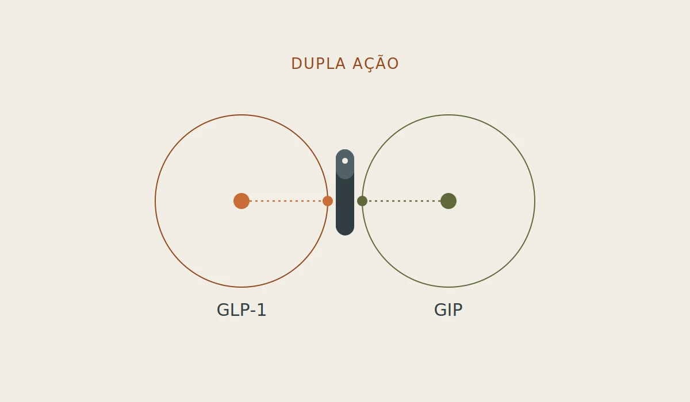
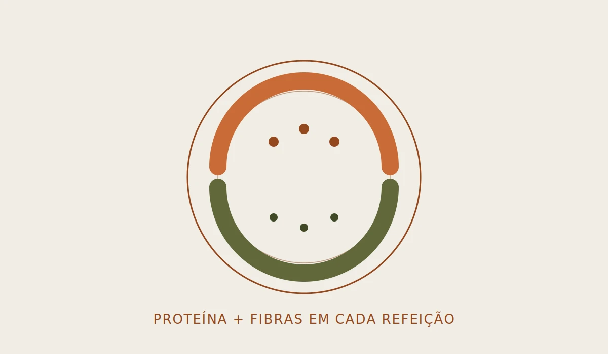
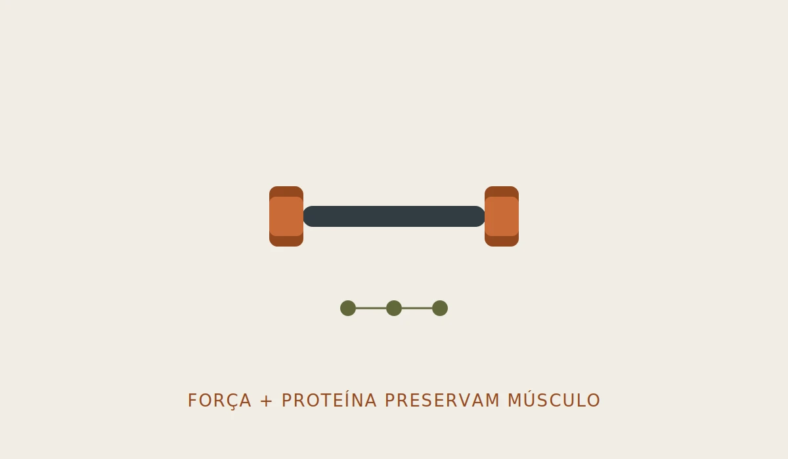
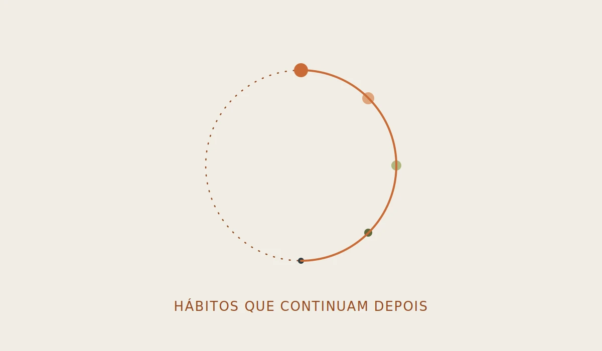

A tirzepatida mudou a forma de tratar a obesidade. Mas ela não faz milagres.
Nos últimos anos, poucas medicações despertaram tanto interesse quanto a tirzepatida. Conhecida comercialmente por medicamentos como o Mounjaro®, ela ganhou destaque pelos resultados expressivos na perda de peso observados em estudos clínicos e na prática médica.
Com tanta repercussão, surgiram também muitas dúvidas. Afinal, como essa medicação funciona? Quem pode utilizá-la? Ela substitui uma alimentação saudável? E o peso volta quando o tratamento termina?
Se você está pensando em iniciar o tratamento ou apenas quer entender melhor como a tirzepatida age no organismo, este artigo reúne as principais informações de forma clara, baseada em evidências científicas e sem promessas milagrosas.
O que é a tirzepatida?
A tirzepatida é um medicamento desenvolvido inicialmente para o tratamento do diabetes tipo 2, mas que também demonstrou grande eficácia no tratamento da obesidade e do excesso de peso em pessoas com indicação médica.
Ela pertence a uma nova geração de medicamentos conhecidos como análogos das incretinas. Enquanto medicamentos mais antigos atuam principalmente sobre o receptor do hormônio GLP-1, a tirzepatida age em dois receptores ao mesmo tempo: GLP-1 e GIP.
Essa ação combinada é um dos motivos pelos quais ela tem apresentado resultados tão expressivos na perda de peso em estudos clínicos.

Como a tirzepatida funciona?
Após as refeições, nosso intestino libera hormônios que ajudam o organismo a controlar a glicose e a regular o apetite. Dois desses hormônios são o GLP-1 e o GIP. A tirzepatida imita a ação desses hormônios, promovendo diversos efeitos que favorecem o tratamento da obesidade. Entre eles estão:
- •Aumento da sensação de saciedade
- •Redução da fome entre as refeições
- •Esvaziamento mais lento do estômago, prolongando a sensação de estar satisfeito
- •Melhora do controle da glicemia
- •Redução do consumo espontâneo de calorias
Na prática, muitas pessoas relatam que deixam de sentir aquela necessidade constante de beliscar alimentos ou de comer grandes quantidades para se sentirem satisfeitas.
A tirzepatida não "queima gordura". Ela facilita a redução da ingestão alimentar, tornando mais fácil manter um déficit calórico ao longo do tempo.
Para quem a tirzepatida é indicada?
A indicação deve sempre ser feita por um médico, após avaliação individual. De forma geral, a tirzepatida pode ser considerada para adultos com obesidade ou com excesso de peso associado a outras condições de saúde, como diabetes tipo 2, hipertensão arterial, apneia do sono ou dislipidemia.
Isso não significa que qualquer pessoa que queira emagrecer deva utilizar a medicação. Assim como qualquer tratamento, ela possui indicações, contraindicações e necessita de acompanhamento profissional.
Quanto peso é possível perder?
Essa é uma das perguntas mais frequentes. Os estudos clínicos mostram que a tirzepatida pode promover perdas de peso importantes quando associada a mudanças no estilo de vida, como alimentação equilibrada e prática regular de atividade física.
No entanto, os resultados variam bastante entre as pessoas. Fatores como adesão ao tratamento, alimentação, nível de atividade física, qualidade do sono e condições de saúde influenciam diretamente a resposta. Por isso, comparar seus resultados com os de outras pessoas raramente é útil.
A alimentação continua sendo importante?
Sim. E talvez essa seja a informação mais importante deste artigo. A tirzepatida reduz o apetite, mas ela não substitui uma alimentação equilibrada.
Quando a pessoa passa a comer muito pouco ou faz escolhas alimentares inadequadas, aumenta o risco de deficiência de vitaminas e minerais, perda de massa muscular e piora da qualidade da dieta. Durante o tratamento, vale a pena dar atenção especial a alguns pontos:
- •Consumir proteínas em todas as refeições
- •Incluir frutas, verduras e legumes diariamente
- •Manter uma boa ingestão de fibras
- •Beber água regularmente
- •Evitar longos períodos sem se alimentar, quando possível
- •Priorizar alimentos minimamente processados
O objetivo não é apenas emagrecer, mas preservar a saúde durante esse processo.

A tirzepatida faz perder massa muscular?
Pode acontecer. Sempre que há uma perda significativa de peso, parte dessa redução pode corresponder à massa muscular, especialmente quando a ingestão de proteínas é insuficiente ou quando não há prática de exercícios de força.
Isso não é exclusivo da tirzepatida. Acontece em praticamente qualquer processo de emagrecimento. A boa notícia é que existem estratégias para reduzir esse risco. Entre elas estão:
- •Consumir proteína em quantidade adequada
- •Praticar musculação ou outros exercícios resistidos
- •Manter uma alimentação equilibrada
- •Realizar acompanhamento com nutricionista e equipe de saúde
Preservar a massa muscular é importante não apenas para a estética, mas também para a força, o metabolismo e a qualidade de vida.

Quais são os efeitos colaterais mais comuns?
Assim como qualquer medicamento, a tirzepatida pode causar efeitos adversos. Os mais frequentes costumam ser gastrointestinais, principalmente no início do tratamento ou após aumento da dose. Entre eles estão:
- •Náuseas
- •Sensação de estômago cheio
- •Redução do apetite
- •Prisão de ventre
- •Diarreia
- •Azia ou refluxo
Em muitas pessoas, esses sintomas diminuem à medida que o organismo se adapta ao medicamento. Algumas medidas simples também podem ajudar, como fazer refeições menores, comer devagar, manter boa hidratação e evitar alimentos muito gordurosos quando houver náusea. Caso os sintomas sejam intensos ou persistentes, o médico deve ser informado.
O que acontece quando a tirzepatida é interrompida?
Outra dúvida bastante comum é se o peso volta após interromper o tratamento. A resposta é que isso pode acontecer.
A obesidade é considerada uma condição crônica e, quando a medicação é suspensa sem que hábitos saudáveis tenham sido consolidados, parte do peso perdido pode ser recuperada. Isso não significa que a medicação "vicia" ou que o tratamento tenha falhado. Significa que manter os resultados depende de uma combinação de fatores, incluindo alimentação, atividade física, sono e acompanhamento profissional.
Por isso, o foco nunca deve ser apenas na balança, mas na construção de hábitos que possam ser mantidos a longo prazo.

Vale a pena usar tirzepatida?
Para pessoas com indicação médica, a tirzepatida representa um avanço importante no tratamento da obesidade e do diabetes tipo 2. No entanto, ela não deve ser vista como uma solução isolada.
Os melhores resultados costumam ocorrer quando o tratamento medicamentoso é combinado com alimentação equilibrada, atividade física regular e acompanhamento por profissionais de saúde. Mais do que perder peso rapidamente, o objetivo deve ser melhorar a saúde e construir hábitos que possam ser mantidos mesmo no futuro.
Em resumo
A tirzepatida é um medicamento inovador que atua sobre os hormônios GLP-1 e GIP, ajudando a controlar a fome e favorecendo a perda de peso em pessoas com indicação médica. Apesar dos resultados promissores, ela não substitui uma alimentação saudável nem elimina a importância da atividade física. Quando utilizada de forma adequada e acompanhada por mudanças consistentes no estilo de vida, pode ser uma ferramenta valiosa no tratamento da obesidade.
Perguntas frequentes
A tirzepatida é indicada apenas para pessoas com diabetes?
Não. Além do tratamento do diabetes tipo 2, ela também pode ser indicada para o tratamento da obesidade ou do excesso de peso em pessoas que preencham os critérios médicos para seu uso.
A tirzepatida substitui dieta e exercício?
Não. A medicação facilita o controle do apetite, mas os melhores resultados acontecem quando ela é associada a uma alimentação equilibrada e à prática regular de atividade física.
Quem usa tirzepatida precisa consumir mais proteína?
Em muitos casos, uma ingestão adequada de proteínas é importante para ajudar na preservação da massa muscular durante a perda de peso. As necessidades variam de acordo com cada pessoa e devem ser avaliadas por um nutricionista.
O peso pode voltar após interromper a tirzepatida?
Pode. A manutenção dos resultados depende da continuidade de hábitos saudáveis e do acompanhamento profissional, mesmo após o fim do tratamento.
Vamos começar sua rotina?
Conheça o acompanhamento →Referências científicas
- American Diabetes Association. Standards of Care in Diabetes.
- Jastreboff AM et al. Tirzepatide Once Weekly for the Treatment of Obesity (SURMOUNT-1). New England Journal of Medicine.
- Rubino DM et al. Effect of Continued Weekly Subcutaneous Tirzepatide vs Placebo on Weight Maintenance in Adults With Obesity (SURMOUNT-4). JAMA.
- American Association of Clinical Endocrinology (AACE). Clinical Practice Guidelines for Obesity.
- World Obesity Federation. Guidance on obesity management.